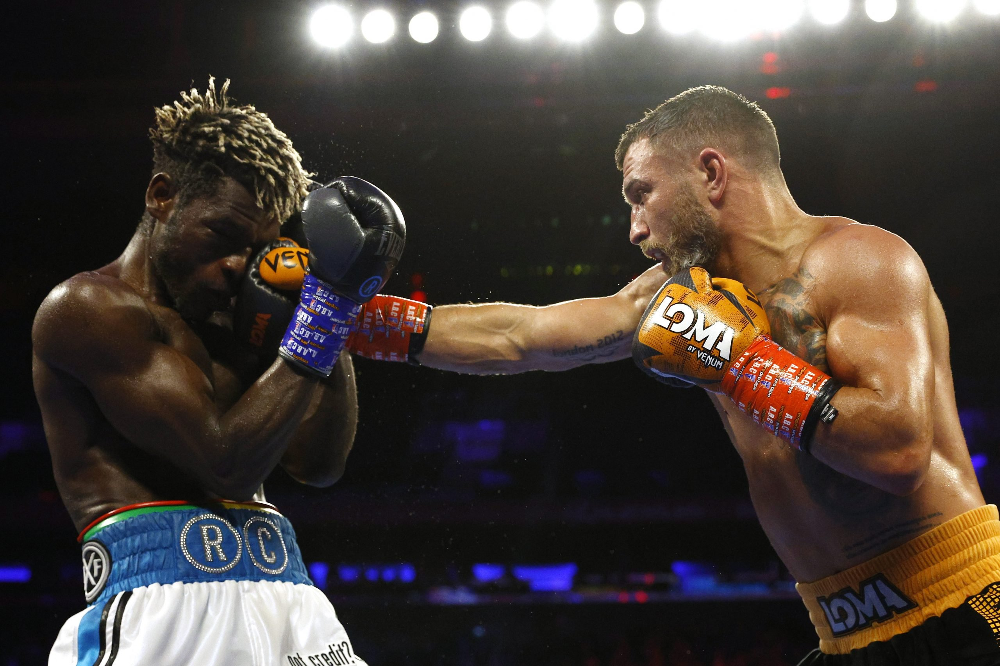

☰
Vasiliy Lomachenko defeats Richard Commey!
Speed, development, power, footwork, protection and quick fire mixes. Vasiliy Lomachenko utilized them all in controlling a boxing center to Richard Commey on Saturday night.
Determined to become undisputed lightweight boss later he had gotten so close prior to losing his brought together belts 14 months prior, Lomachenko turned in a magnum opus in an unbalanced whipping of individual previous titlist Commey in the headliner of the "High level Boxing on ESPN" card at New York City's Madison Square Garden.
The Garden was facilitating its first battle card in the principle field in two years due to the Covid pandemic. Lomachenko, who dropped Commey in the seventh round and almost halted him, won by scores of 119-108 twice and 117-110, no doubt stirring up a lot of pleasure for the favorable to Lomachenko reported horde of 8,555. The Ring had Lomachenko winning 120-107. Three-division champion and double cross Ukrainian Olympic gold medalist Lomachenko lost his bound together titles to Teofimo Lopez by choice in October 2020 yet battled with a torn right shoulder that was worked on later the battle.
Unfit to get a prompt rematch, Lomachenko returned in June and showed he was as yet an awe-inspiring phenomenon in an uneven 10th round stoppage of Japanese competitor Masayoshi Nakatani. He put on a correspondingly extraordinary show against the rock solid Commey other than getting a stoppage. "He’s a little bit quicker. He throws combinations very well and that’s what makes him special," said Commey, who was taken to the emergency clinic as a precautionary measure.
From the beginning, previous pound-for-pound ruler Lomachenko, a southpaw, flaunted his enormous development via landing shots and rapidly moving away from Commey's assaults.
Lomachenko (16-2, 11 knockouts), 33, battling his seventh rival in column with a stature and arrive at advantage, barraged Commey with straight left hands all through the battle, including a gigantic one that shook Commey at the chime finishing the second round. Lomachenko said later the battle that he utilized the first and second adjusts to sort Commey out and had done as such before the second's over round.
Commey (30-4, 27 KOs), 34, of Ghana, had some accomplishment with cleaving shots within in the third round however that was before Lomachenko released a three-punch blend with each punch arrival, including a head-snapping left hand. Later in the round, Lomachenko shook him again with a left uppercut. There was little Commey could do to fight off Lomachenko's pin-point blends, similar to one he arrived in the fourth round — a sharp three-punch mix that completed to the body.
“It’s always important to throw body shots. In boxing, you can’t use just one punch,” Lomachenko said. “You have to use from body to head.”
The Garden was facilitating its first battle card in the principle field in two years due to the Covid pandemic. Lomachenko, who dropped Commey in the seventh round and almost halted him, won by scores of 119-108 twice and 117-110, no doubt stirring up a lot of pleasure for the favorable to Lomachenko reported horde of 8,555. The Ring had Lomachenko winning 120-107. Three-division champion and double cross Ukrainian Olympic gold medalist Lomachenko lost his bound together titles to Teofimo Lopez by choice in October 2020 yet battled with a torn right shoulder that was worked on later the battle.
Unfit to get a prompt rematch, Lomachenko returned in June and showed he was as yet an awe-inspiring phenomenon in an uneven 10th round stoppage of Japanese competitor Masayoshi Nakatani. He put on a correspondingly extraordinary show against the rock solid Commey other than getting a stoppage. "He’s a little bit quicker. He throws combinations very well and that’s what makes him special," said Commey, who was taken to the emergency clinic as a precautionary measure.
From the beginning, previous pound-for-pound ruler Lomachenko, a southpaw, flaunted his enormous development via landing shots and rapidly moving away from Commey's assaults.
Lomachenko (16-2, 11 knockouts), 33, battling his seventh rival in column with a stature and arrive at advantage, barraged Commey with straight left hands all through the battle, including a gigantic one that shook Commey at the chime finishing the second round. Lomachenko said later the battle that he utilized the first and second adjusts to sort Commey out and had done as such before the second's over round.
Commey (30-4, 27 KOs), 34, of Ghana, had some accomplishment with cleaving shots within in the third round however that was before Lomachenko released a three-punch blend with each punch arrival, including a head-snapping left hand. Later in the round, Lomachenko shook him again with a left uppercut. There was little Commey could do to fight off Lomachenko's pin-point blends, similar to one he arrived in the fourth round — a sharp three-punch mix that completed to the body.
“It’s always important to throw body shots. In boxing, you can’t use just one punch,” Lomachenko said. “You have to use from body to head.”